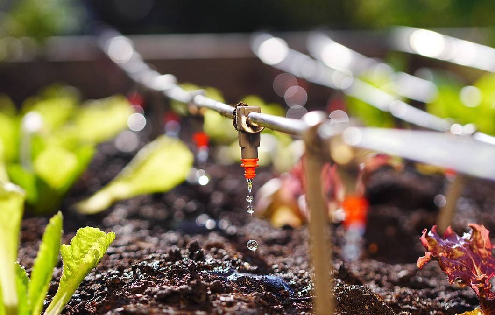

O QUE É AGRICULTURA SUSTENTAVEL?
A agricultura sustentável respeita o meio ambiente. Usada para garantir que gerações futuras tenham a capacidade de suprir necessidades de produção e qualidade de vida.

Exemplos de práticas de agrícolas sustentáveis
